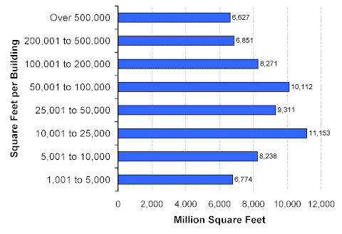

Size of Buildings
The 1999 CBECS estimated that 2,348,000 commercial buildings, or just over half (50.4 percent) of total buildings, were found in the smallest building size category (1,001 to 5,000 square feet) (Figure 1). Only 7,000 buildings occupied the largest size category (over 500,000 square feet).
Figure 1. Distribution of Buildings by Size of Building, 1999 Energy Information Administration
Energy Information AdministrationCommercial Buildings Energy Consumption Survey
The middle size categories (10,001 to 100,000 square feet) had relatively more floorspace per category than smaller or larger size categories (Figure 2). The greatest amount of floorspace, about 11,153,000 square feet (or 17 percent of total floorspace) was found in the 10,001 to 25,000 square feet category.
Figure 2. Distribution of Floorspace by Size of Building, 1999 Energy Information Administration
Commercial Buildings Energy Consumption Survey
Return to:
“1999 CBECS—Commercial Buildings Characteristics”
Specific questions may be directed to:
Alan Swenson
alan.swenson@eia.doe.gov
Phone: (202) 586-1129
FAX: (202) 586-0018
Release date: May 21, 2002
http://www.eia.gov/consumption/commercial/data/archive/cbecs/char99/size.html
If you are having any technical problems with this site, please contact the EIA webmaster at wmaster@eia.doe.gov.